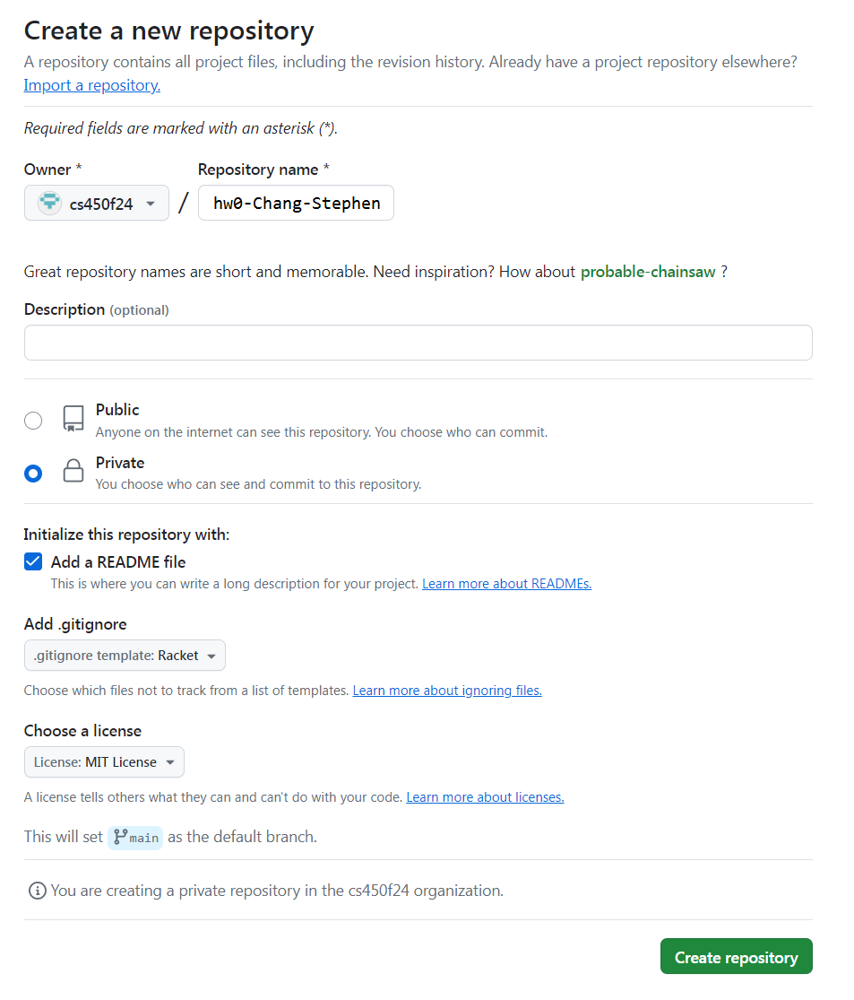
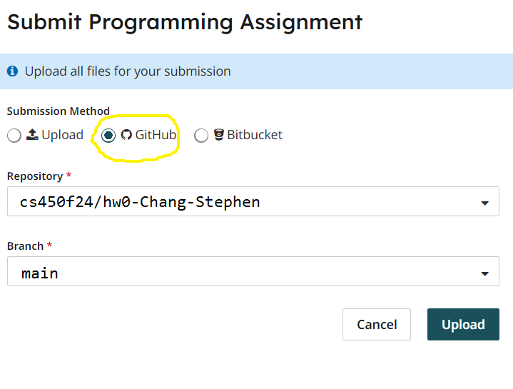

Homework 0
Last updated: Mon, 9 Sep 2024 10:26:30 -0400
Out: Wed September 4, after first class
Due: Mon September 9, 12pm (noon) EST
Overview
This is a quick assignment to make sure that everyone is set up to complete and submit assignments in this course.
have a github.com account,
know how to execute basic git commands,
have told me your GitHub user name,
be a member of the CS450 Fall 2024 GitHub Organization,
have Racket installed,
know how to run basic Racket programs,
begin to understand basic functional programming (in Racket),
know how to submit homework to Gradescope, using the GitHub Submission Method, for this class.
This assignment is worth 10 points.
Initial GitHub Tasks
Create a GitHub account (if you don’t already have one)
Tell me your GitHub account by completing the pre-class survey as soon as possible. When I know your GitHub account, I will add you to the CS450 Fall 2024 GitHub Organization.
Create a new repository for this assignment by going to the CS450 Fall 2024 GitHub Organization and clicking "New" (you can only do this after I have added you to the organization).

Note: The CS450 Fall 2024 GitHub Organization must be the owner of the repository. Do not create the repository in your own account.
- On the "Create a new repository" screen:
Name the repository hw<X>-<LASTNAME>-<FIRSTNAME> where <X> is the current homework number.
For example, I would name my hw0 repository hw0-Chang-Stephen.
Mark the repository as Private.
Check "Add a README file".
Select the Racket template for the .gitignore.
Choose whatever you wish for the license.
Here is an example screenshot: 
When done click "Create repository".
Choose and install a GitHub client on your computer. You may choose either a GUI client, or a command line one.
With help from the Getting started with Git and Using Git documentation, figure out how to clone the newly created hw<X>-<LASTNAME>-<FIRSTNAME> repository to your computer.
Now you are almost ready to work!
Installing Racket
Download Racket (for your platform) and install it.
The DrRacket IDE is easiest to use (especially for viewing images), but several other editors have Racket support as well.
Reading
Read the Preface, Prologue, and Chapters 1.1-1.3 of How to Design Programs (2nd ed). Make sure to run the examples to get a feel for how to write and run programs in Racket.
NOTE: The textbook will refer to "Student Languages" which we will not use in this course (and a "Stepper" that only works with the Student Languages). Instead, we will always use the full Racket language, which is invoked by putting #lang racket at the top of a file (see below).
How to Write Code In (and Outside of) This Class
Do the programming Tasks below. Before you do so, this section spells out some requirements and tips.
File Name and Contents
Put your code in a file named hw0.rkt, located in the repository root directory.
The first line of the file (and every file in this course) should be #lang racket)
The hw0.rkt file must also export (using provide) the definitions needed for grading. The easiest way to ensure that your solution file can be graded is to put as the second line in the file:
You can see an example of what an initial hw0.rkt file looks at in hw0 starter code.
Commiting Files to GitHub
As you do the assignment, when you’ve reached an appropriate milestone (e.g., finished one exercise), you should commit and push your work to GitHub.
(Review Getting started with Git and Using Git if you need to.)
This will not only save a backup of your work in case of computer malfunction, it will also create a nice log in case you or someone else (me) needs to review it later, or if you need to revert to a previous state.
Make sure every commit has an appropriate commit message. See How to Write a Git Commit Message if you are unsure how to write a commit message.
Having a proper commit history, with good messages, will be part of the grade of each assignment.
Tasks
At it’s core, programming in a "functional" language like Racket is similar to writing mathematical functions.
For example, to implement the mathematical function f(x) = x + 1, you would write in Racket:
(define (f x) (+ x 1))
(As you can see, in Racket, an open paren begins a function call, and the function name always come before the arguments.)
Write the following functions.
In physics, you learn that the distance an object travels is equal to d(t) = v_0t + \frac{1}{2}at^2, where v_0 is the initial velocity and a is the acceleration.
If v_0=5 \textrm{ m/s} and a = 9.8 \textrm{ m/s}^2, then implement a function dist in Racket that, given a time in seconds, computes the distance traveled.
Of course, functions are not limited to operating on numbers. Another common kind of data when programming is the string. Write a function called naive-pluralize that, given an input string, adds an "s" to the end of it.
Write a function insert-string that, given an input string s, non-negative integer i, and a second input string str, inserts str after the ith character in s. Assume character position is 0-based.
Submission Requirements
All code in this course will be evaluated not only for correctness, but also for readability, of which one component is style. In this course, all submitted code must follow the Racket Style Guide. The key points will also be emphasized in lecture.
Submitting
When you are done, submit your work to Gradescope hw0. You must use the "GitHub" Submission Method and select your hw<X>-<LASTNAME>-<FIRSTNAME> repository.

Note that this is the only acceptable way to submit homework in this course. (Do not manually upload files and do not email files to the course staff. Homework submitted via any unapproved methods will not be graded.)